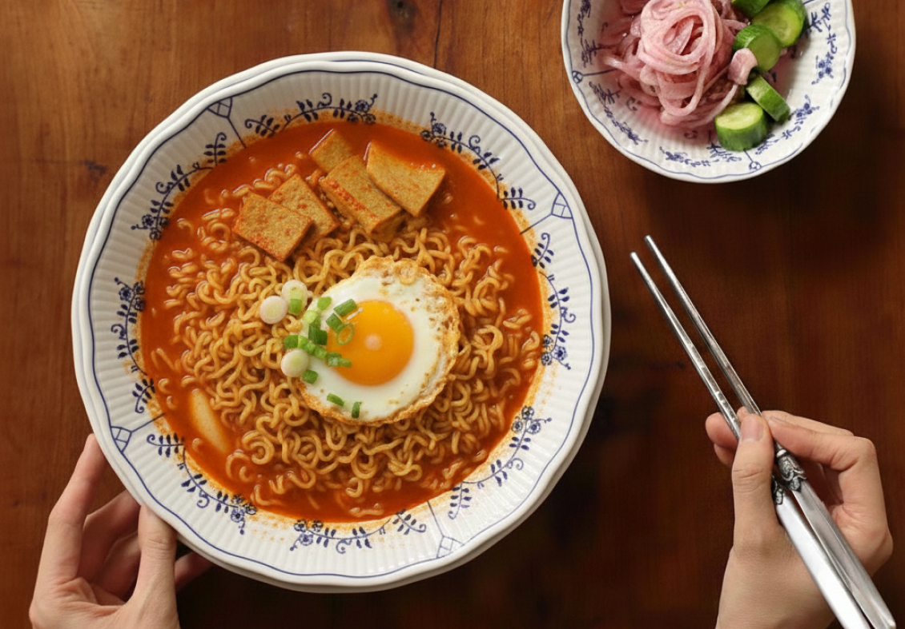
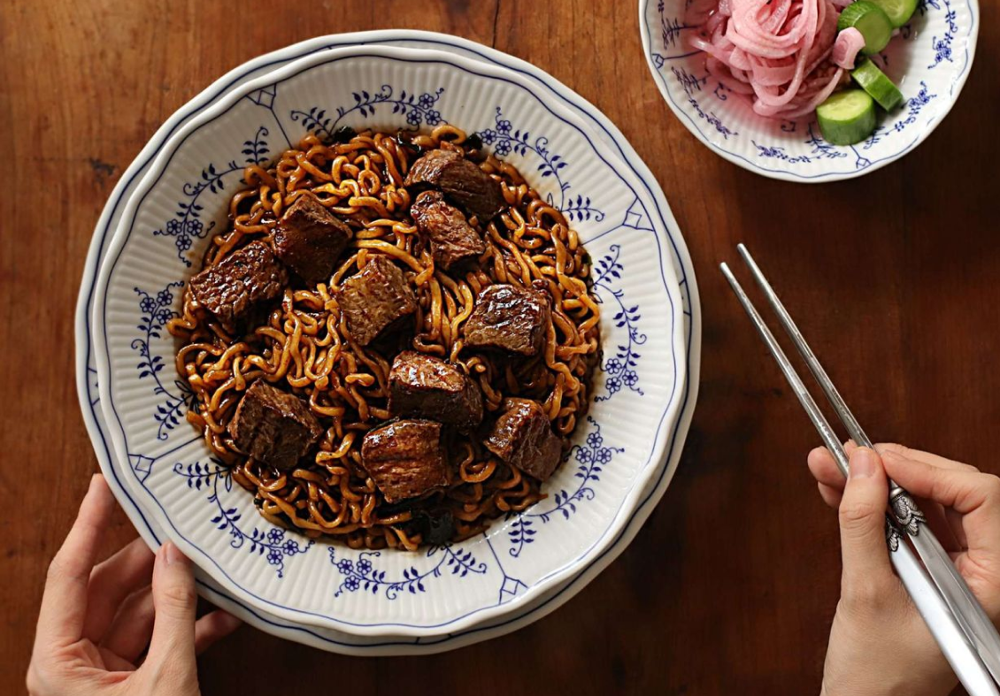

1)
레시피 1
계란구름라면
재료: 라면 1봉, 계란 2개
- 1. 물을 봉지에 적힌 것보다 더 적게 넣는다.
- (약 350~400ml 정도)
- 2. 스프를 넣은 후 면을 넣는다.
- 3. 면발이 물결치기 시작할 때 라면을 한쪽으로 치우고 미리 풀어둔 계란을 넣는다.
- 4. 1분 30초 정도 더 끓이면 완성!

2)
레시피 2
순두부 열라면
재료: 열라면 1/2, 순두부 1/2, 계란 1개, 다진마늘, 청양고추, 대파, 후추
- 1. 냄비에 물 250ml와 순두부 반개를 넣는다.
- 2. 열라면 건더기 스프, 분말 스프 각각 1/2씩 넣고 끓인다.
- 3. 다진 마늘을 한 스푼 넣는다.
- 4. 물이 끓으면 면 1/2, 고추, 파, 후추를 넣는다.
- 5. 계란 한 개를 넣고 취향껏 끓여 먹는다.

3)
레시피 3
짜파구리
재료: 짜파게티 1봉, 너구리 1봉
- 1. 짜파게티와 너구리를 준비한다.
- 2. 끓는 물에 두 면과 건더기 스프를 넣고 4분 30초 끓인다.
- 3. 면수를 100~150ml 정도 남기고 버린다.
- 4. 스프(짜파게티 1 + 너구리 1/2)를 넣고 비벼준다.
- 5. 올리브 조미유를 넣고 완성한다.